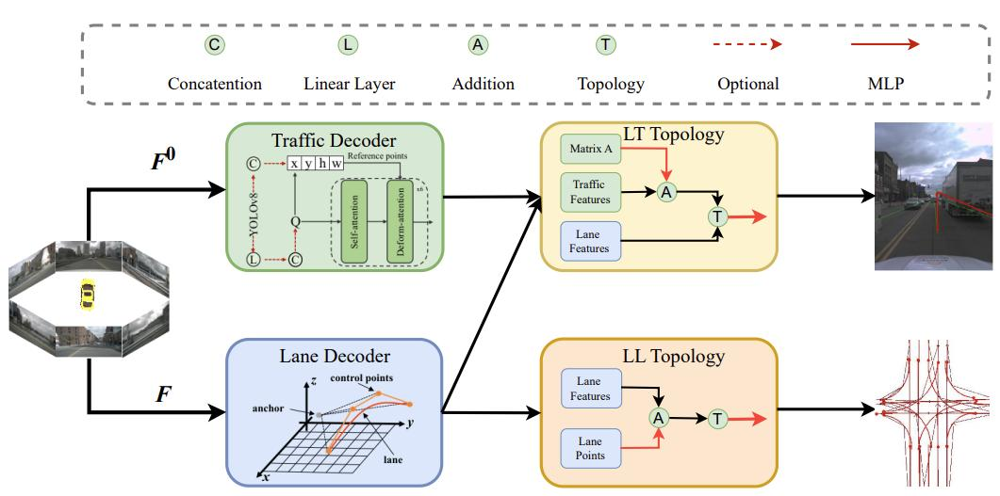
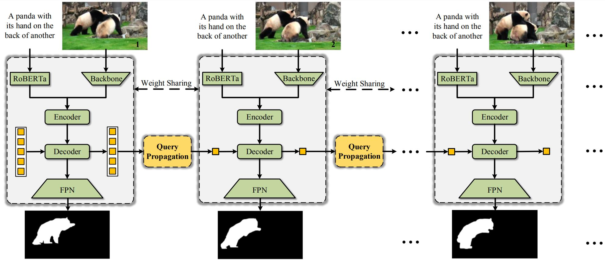
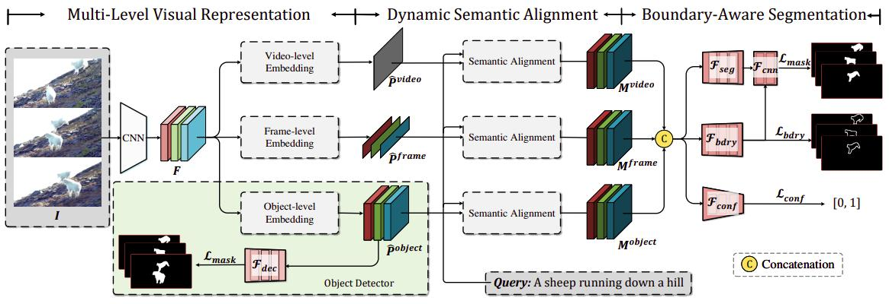

Dongming Wu
I am currently a Postdoctoral Fellow at MMLab, the Chinese University of Hong Kong, and at CPII, working with Prof. Xiangyu Yue.
In 2025.06, I received my PhD degree in Department of Computer Science, Beijing Institute of Technology, advised by Prof. Jianbing Shen.
In 2019.06, I received my Bachelor degree from the Class of Xu at the same university.
Research Interests
My current research interests lie in vision-language learning, multimodal large language models (MLLMs), and embodied agents. (1) During my graduate studies, I focused on building intelligent perception models that understand visual and linguistic information. (2) More recently, I’ve been exploring decision-making systems capable of actively interacting with both humans and dynamic environments. Ultimately, my goal is to develop human-like agents that can perceive real-world environments and make autonomous decisions, moving us closer to achieving artificial general intelligence (AGI). Two articles that have deeply inspired my thinking are The Bitter Lesson and The Second Half.I am always open to collaboration and discussions about the latest advancements in the field. Feel free to reach out!
News
- üéâ 2025.06: One paper (RAGNet) is accepted by ICCV2025.
- üéì 2025.06: I successfully defense my Ph.D. thesis. I‚Äôm awarded Outstanding Graduates of Beijing (Âåó‰∫¨Â∏ljºòÁßÄÊØï‰∏öÁîü).
- 2025.02: One paper (DrivingSphere) is accepted by CVPR2025.
- 2024.12: One paper (NuPrompt) is accepted by AAAI2025.
- 2024.07: One paper (Merlin) is accepted by ECCV2024.
- 2024.05: I’m awarded Excellent Doctoral Thesis Seedling Fund (优秀博士论文育苗基金).
- 2024.01: One paper (TopoMLP) is accepted by ICLR2024.
Experience
Publications
Preprint Papers
-
Grounding Beyond Detection: Enhancing Contextual Understanding in Embodied 3D Grounding
Yani Zhang, Dongming Wu, Hao Shi, Yingfei Liu, Tiancai Wang, Haoqiang Fan, Xingping Dong
Rank 1st place on EmbodiedScan Visual Grounding
| 2025 | Paper | Code | -
Is a 3D-Tokenized LLM the Key to Reliable Autonomous Driving?
Yifan Bai*, Dongming Wu*, Yingfei Liu, Fan Jia, Weixin Mao, Ziheng Zhang, Yucheng Zhao, Jianbing Shen, Xing Wei, Tiancai Wang, Xiangyu Zhang (*Equal Contributions)
| 2024 | Paper | -
Bootstrapping Referring Multi-Object Tracking
Yani Zhang, Dongming Wu, Wencheng Han, Xingping Dong
| 2024 | Paper | Code |
Conference Papers
ICCV 2025
RAGNet: Large-scale Reasoning-based Affordance Segmentation Benchmark towards General Grasping
| ICCV 2025 | Paper | Code |
Dongming Wu, Yanping Fu, Saike Huang, Yingfei Liu, Fan Jia, Nian Liu, Feng Dai, Tiancai Wang, Rao Muhammad Anwer, Fahad Shahbaz Khan, Jianbing Shen
| ICCV 2025 | Paper | Code |
Dongming Wu, Yanping Fu, Saike Huang, Yingfei Liu, Fan Jia, Nian Liu, Feng Dai, Tiancai Wang, Rao Muhammad Anwer, Fahad Shahbaz Khan, Jianbing Shen
- We present a large-scale reasoning-based affordance segmentation benchmark RAGNet and introduce a comprehensive affordance-based grasping framework AffordanceNet.
CVPR 2025
DrivingSphere: Building a High-fidelity 4D World for Closed-loop Simulation
| CVPR 2025 | Paper | Code |
Tianyi Yan, Dongming Wu, Wencheng Han, Junpeng Jiang, Xia Zhou, Kun Zhan, Cheng-zhong Xu, Jianbing Shen
| CVPR 2025 | Paper | Code |
Tianyi Yan, Dongming Wu, Wencheng Han, Junpeng Jiang, Xia Zhou, Kun Zhan, Cheng-zhong Xu, Jianbing Shen
- DrivingSphere is a novel geometry-aware closed-loop simulation framework that captures 2D visual and 3D geometric properties while seamlessly integrating with vision-based end-to-end driving agents.
AAAI 2025
Language prompt for autonomous driving
| AAAI 2025 | Paper | Code |
Dongming Wu, Wencheng Han, Tiancai Wang, Yingfei Liu, Xiangyu Zhang, Jianbing Shen
| AAAI 2025 | Paper | Code |
Dongming Wu, Wencheng Han, Tiancai Wang, Yingfei Liu, Xiangyu Zhang, Jianbing Shen
- DrivingSphere is a novel geometry-aware closed-loop simulation framework that captures 2D visual and 3D geometric properties while seamlessly integrating with vision-based end-to-end driving agents.
ECCV 2024

Merlin: Empowering Multimodal LLMs with Foresight Minds
| ECCV 2024 | Paper | Code |
En Yu, Liang Zhao, Yana Wei, Jinrong Yang, Dongming Wu, Lingyu Kong, Haoran Wei, Tiancai Wang, Zheng Ge, Xiangyu Zhang, Wenbing Tao
| ECCV 2024 | Paper | Code |
En Yu, Liang Zhao, Yana Wei, Jinrong Yang, Dongming Wu, Lingyu Kong, Haoran Wei, Tiancai Wang, Zheng Ge, Xiangyu Zhang, Wenbing Tao
- Merlin is a groundbreaking model capable of generating natural language responses that are intricately linked with object trajectories of multiple images.
ICLR 2024

TopoMLP: A Simple yet Strong Pipeline for Driving Topology Reasoning
| ICLR 2024 | Paper | Code |
Dongming Wu, Jiahao Chang, Fan Jia, Yingfei Liu, Tiancai Wang, Jianbing Shen
| ICLR 2024 | Paper | Code |
Dongming Wu, Jiahao Chang, Fan Jia, Yingfei Liu, Tiancai Wang, Jianbing Shen
- TopoMLP is the 1st solution for 1st OpenLane Topology in Autonomous Driving Challenge. It suggests a first-detect-then-reason philosophy for better topology prediction.
ICCV 2023

OnlineRefer: A Simple Online Baseline for Referring Video Object Segmentation
| ICCV 2023 | Paper | Code |
Dongming Wu, Tiancai Wang, Yuang Zhang, Xiangyu Zhang, Jianbing Shen
| ICCV 2023 | Paper | Code |
Dongming Wu, Tiancai Wang, Yuang Zhang, Xiangyu Zhang, Jianbing Shen
- OnlineRefer is the first to challenge the widespread belief that only offline models can deal well with RVOS and makes online RVOS great again.
CVPR 2023
Referring Multi-Object Tracking
| CVPR 2023 | Paper | Code |
Dongming Wu, Wencheng Han, Tiancai Wang, Xingping Dong, Xiangyu Zhang, Jianbing Shen
| CVPR 2023 | Paper | Code |
Dongming Wu, Wencheng Han, Tiancai Wang, Xingping Dong, Xiangyu Zhang, Jianbing Shen
- RMOT is a new referring understanding task that can detect and track an arbitrary number of objects following human instruction. We propose the first RMOT benchmark Refer-KITTI, and a baseline model TransRMOT.
CVPR 2022

Multi-Level Representation Learning with Semantic Alignment for Referring Video Object Segmentation
| CVPR 2022 | Paper |
Dongming Wu, Xingping Dong, Ling Shao, Jianbing Shen
| CVPR 2022 | Paper |
Dongming Wu, Xingping Dong, Ling Shao, Jianbing Shen
Journal Papers:
-
Person re-identification by context-aware part attention and multi-head collaborative learning (TIFS)
Dongming Wu, Mang Ye, Gaojie Lin, Xin Gao, Jianbing Shen
| 2021 | Paper | -
Reducing estimation bias via triplet-average deep deterministic policy gradient (TNNLS)
Dongming Wu, Xingping Dong, Jianbing Shen, Steven CH Hoi
| 2020 | Paper |
Technical Report:
Honors & Awards
- Excellent Doctoral Dissertation Beijing Institute of Technology (北京理工大学优秀博士论文)
- Outstanding Graduates of Beijing (北京市优秀毕业生)
- Outstanding Graduates of Beijing Institute of Technology (北京理工大学优秀毕业生)
- Excellent Doctoral Dissertation Seedling Fund of Beijing Institute of Technology (北京理工大学优秀博士论文育苗基金)
- National Scholarship (国家奖学金), Ministry of Education China
- The 1st place at OpenLane Topology in CVPR2023 Autonomous Driving Challenge ($15,000), Shanghai AI Lab and Huawei
- ChinaCentury Scholarship (华瑞世纪奖学金), Beijing Institute of Technology
Service
Conferences:
- CVPR 2023, 2024, 2025
- ICCV 2023, 2025
- ECCV 2024
- NeurIPS 2025
- ICLR 2025
- AAAI 2025
Journals:
- International Journal of Computer Vision (IJCV)
- IEEE Transactions on Image Processing (TIP)
- IEEE Transactions on Neural Networks and Learning Systems (TNNLS)
- IEEE Transactions on Multimedia (TMM)
- IEEE Transactions on Circuits and Systems for Video Technology (TCSVT)
- IEEE Transactions on Intelligent Vehicles (TIV)
- Pattern Recognition (PR)
- Neurocomputing